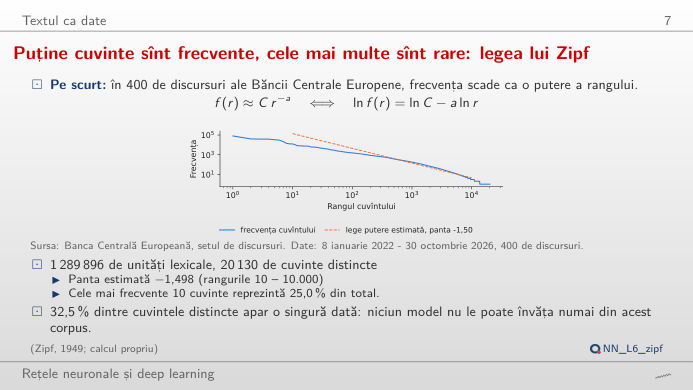
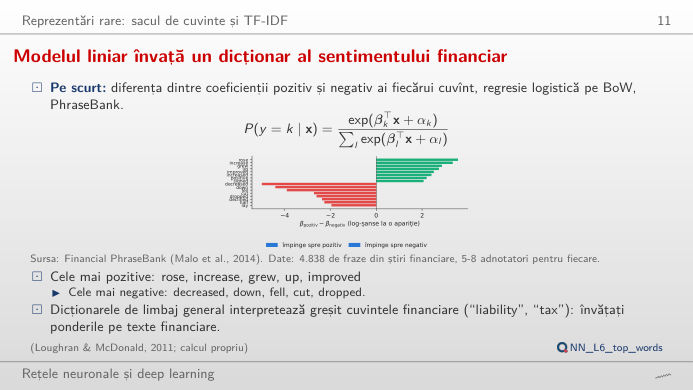
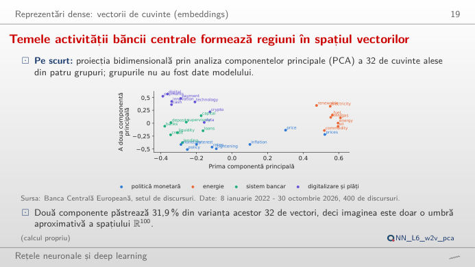
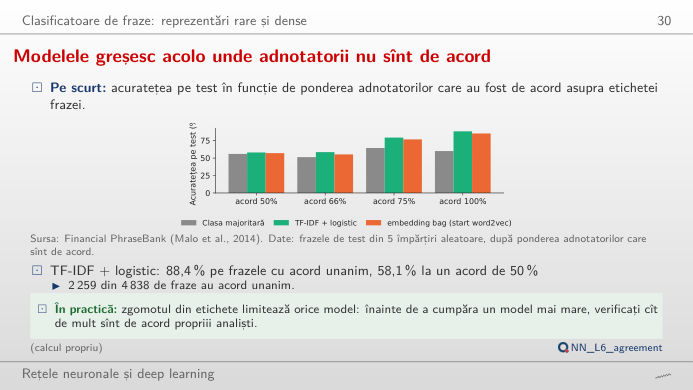
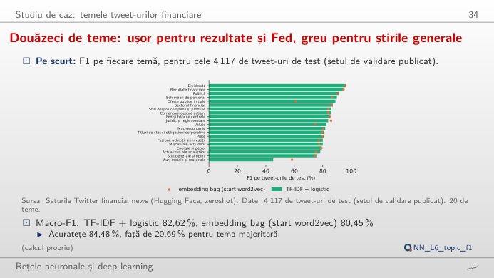

Prelucrarea limbajului natural (NLP, natural language processing) transformă textul în numere. În stînga este slide-ul din curs, în dreapta aceeași idee, recalculată în browser din datele cursului și din modelele antrenate în curs cînd modificați un control. Sub fiecare figură: o sinteză numerică, o întrebare pentru sală și Quantlet-ul cu codul figurii.
Textul ca date · Reprezentări rare: sacul de cuvinte · Reprezentări dense: vectorii de cuvinte · Clasificatoare de fraze · Studiu de caz: temele tweet-urilor financiare
Textul ca date
Puține cuvinte sînt frecvente, cele mai multe sînt rare: legea lui Zipf

Răspuns
Discursurile au 20.130 de cuvinte distincte; frecvența minimă 5 păstrează 8.539 dintre ele (42%), dar acoperă încă 98,4% din cele 1.289.896 de unități lexicale. Cuvintele rare sînt multe, dar fiecare apare rar, deci textul pierdut este doar 1,6%. Ridicați pragul la 100: 1.545 de cuvinte acoperă încă 86,1% din text. Aceasta este legea lui Zipf (panta −1,498 în scară dublu logaritmică): un vocabular mic acoperă cea mai mare parte a textului, iar coada lungă produce cuvintele din afara vocabularului (OOV, out of vocabulary).
Reprezentări rare: sacul de cuvinte
Modelul liniar învață un dicționar al sentimentului financiar

Răspuns
Modelul pierde cuvîntul „down”, pe care lista scikit-learn îl elimină (împreună cu „up”, „not”, „below” și „above”), iar „down” este cel mai puternic cuvînt negativ al frazei (β_pozitiv − β_negativ = −4,41). Fără el, fraza este clasificată neutră (41,0%, față de 29,7% negativă). La fel se întîmplă cu „Operating profit was EUR 139.7 mn, up 23% …”, care trece de la 83,2% pozitivă la o predicție negativă (44,8%). O preprocesare generică elimină exact cuvintele care poartă sentimentul financiar; scrieți propria frază pentru a testa alte cuvinte.
Reprezentări dense: vectorii de cuvinte
Vecinii cei mai apropiați în spațiile word2vec și GloVe

Răspuns
Ambele modele pun pe primele locuri „rates” și „rate” (cosinus 0,83 și 0,80 în word2vec, 0,91 și 0,83 în GloVe): în discursurile unei bănci centrale, „interest” înseamnă aproape întotdeauna dobîndă. O reprezentare statică are un singur vector pentru fiecare cuvînt, construit din toate contextele sale, deci sensul rar dispare. Cuvintele comune celor două liste sînt colorate: pentru „inflation”, doar 2 dintre primii 5 vecini sînt comuni (headline, underlying); cursul raportează în medie 1,88 cuvinte comune pentru cele opt cuvinte-test.
O hartă a spațiului vectorilor
Răspuns
Da: cuvintele despre politica monetară, energie, sistemul bancar și plăți ocupă regiuni diferite, deși harta păstrează doar circa 32% din varianța celor 32 de vectori (31,8% pentru word2vec și 31,5% pentru GloVe, calculat aici pe vectori rotunjiți la patru zecimale; cursul raportează 31,9%). Păstrați doar politica monetară și energia: primele două componente păstrează acum 45,9% (word2vec), pentru că harta are mai puține direcții de arătat. O hartă 2-D este o imagine, nu o măsură a asemănării; pentru aceasta folosiți cosinusul vectorilor compleți.
Clasificatoare de fraze
Modelele greșesc acolo unde adnotatorii nu sînt de acord

Răspuns
Nu. Pe frazele asupra cărora toți adnotatorii au fost de acord are dreptate în 88,4% din cazuri, pe cele cu acord de doar 50% în 58,1% din cazuri, abia peste răspunsul „neutră” dat mereu (56,0%). Matricea de confuzie arată unde merg erorile: frazele pozitive și negative sînt împinse mai ales spre neutru (263 de fraze pozitive și 107 negative în cele cinci seturi de test). Celelalte modele, inclusiv embedding bag, au același profil: zgomotul din etichete limitează acuratețea, deci verificați acordul propriilor adnotatori înainte de a cumpăra un model mai mare.
Studiu de caz: temele tweet-urilor financiare
Douăzeci de teme: ușor pentru rezultate și Fed, greu pentru știrile generale

Răspuns
Are doar 13 tweet-uri de test, iar cuvintele ei se suprapun cu știrile macroeconomice și de piață: 7 din cele 13 sînt clasificate corect, 2 ajung la „Macroeconomie”. Cu atît de puține exemple, o singură eroare mută F1 cu cîteva puncte; embedding bag atinge 58,3% pe aceeași temă, deși este mai slab în medie (macro-F1 80,45% față de 82,62%). Alegeți „Dividende” pentru tema cea mai ușoară (F1 96,4%): vocabularul ei este specific.
Date: discursurile Băncii Centrale Europene (BCE), 8 ianuarie 2022 – 30 octombrie 2026, 400 de discursuri; Financial PhraseBank (Malo et al., 2014), 4.838 de fraze din știri financiare, 5–8 adnotatori pentru fiecare; Twitter financial news, sentiment și teme (Hugging Face, zeroshot). Vectorii de cuvinte (word2vec, GloVe) și clasificatoarele au fost antrenate de lectures/L6/analysis_L6.py; regresia logistică pe sacul de cuvinte din al doilea bloc este modelul din curs (împărțirea 1 a PhraseBank), reestimat aici cu aceleași setări.